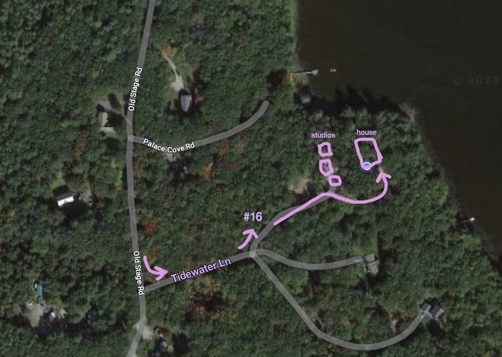

Welcome to Maine Branch
Here you'll find details for your stay at Maine Branch
Address
Maine Branch is located at 16 Tidewater Ln, Arrowsic, ME 04530. Google Maps should be accurate but the road is fairly new so beware.
Directions
When you're heading south on Old Stage Road, you'll see Tidewater Lane on your left. Turn here and go ~500 ft and you'll see #16 on your left. Make the left and drive past the studio buildings all the way down to the house, at the end of the driveway. See map:

Entry
All doors will be unlocked and can remain unlocked during your stay.